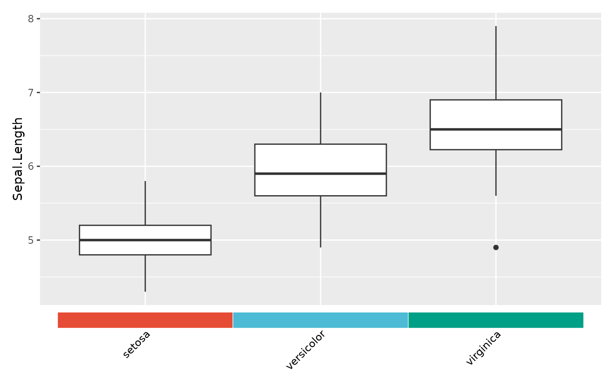
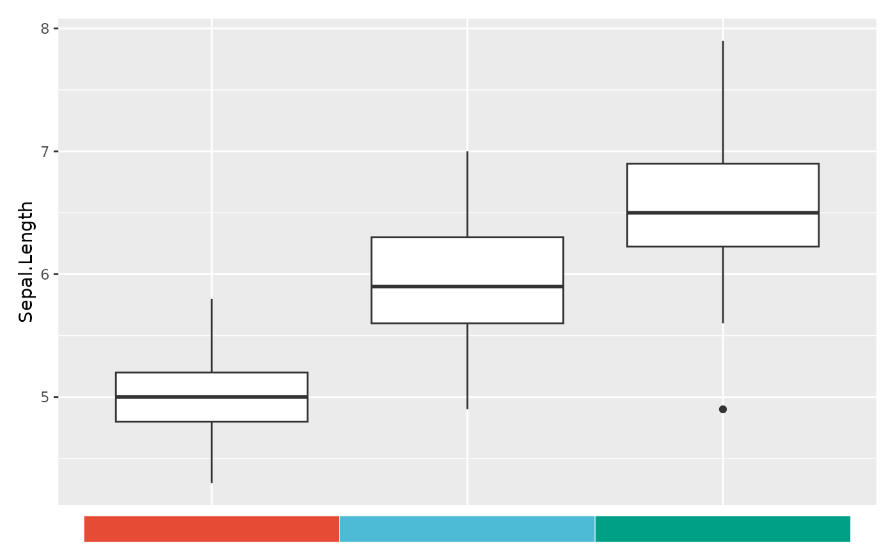
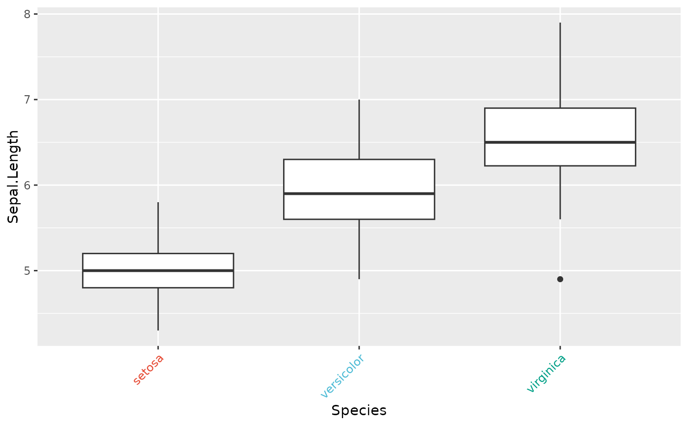
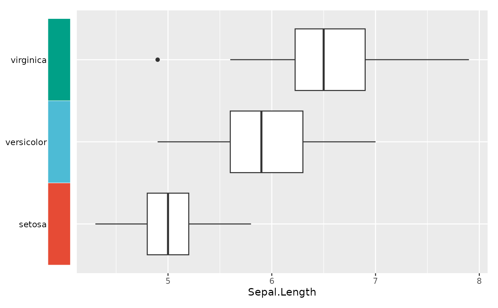

Insert a strip of colored tiles between the plot area and the axis text labels. Two modes are available:
"tile"(default) — insert ageom_tilecolor strip between the axis line and text labels via patchwork. Labels appear below (x-axis) or beside (y-axis) the tiles."text"— color the axis label text directly (no background tile), lightweight but uses unofficial vectorizedelement_text.
Arguments
- plot
A ggplot, patchwork, or list of ggplot objects.
- colors
Named character vector of colors, where names match the discrete axis levels (e.g.
c(setosa = "red", virginica = "blue")). Required.- mode
"tile"(default) or"text".- axis
Which axis to apply to:
"x"(default) or"y".- tile_height
Numeric. Relative height of the tile strip when
axis = "x". Default 0.06.- tile_width
Numeric. Relative width of the tile strip when
axis = "y". Default 0.06.- tile_border
Color of tile borders. Default
"white".- tile_border_width
Line width of tile borders. Default 0.2.
- text_size
Size of axis text labels below/beside tiles. Default 9.
- text_face
Font face of axis text labels. Default
"plain".- text_angle
Rotation angle for axis text labels. Default
45for x-axis,0for y-axis.- text_color
Color of axis text labels. Default
"black".- show_text
Logical. Show text labels below/beside tiles? Default
TRUE. SetFALSEfor color-only tiles.
See also
Other plot formatting:
fmt_axis(),
fmt_axisText(),
fmt_bg(),
fmt_boxplot(),
fmt_com(),
fmt_expand(),
fmt_his(),
fmt_legend(),
fmt_panel(),
fmt_plot(),
fmt_plot_base(),
fmt_point(),
fmt_raster(),
fmt_ref(),
fmt_scale(),
fmt_strip(),
fmt_strip2(),
fmt_tag(),
fmt_text()
Examples
library(ggplot2)
cols <- c(setosa = "#E64B35", versicolor = "#4DBBD5", virginica = "#00A087")
p <- ggplot(iris, aes(Species, Sepal.Length)) + geom_boxplot()
# Tile mode: color strip between axis and rotated labels
fmt_axisTile(p, colors = cols)

# Tile mode: no text labels, color-only strip
fmt_axisTile(p, colors = cols, show_text = FALSE)

# Text mode: colored axis labels (no tiles)
fmt_axisTile(p, colors = cols, mode = "text")
#> Warning: Vectorized input to `element_text()` is not officially supported.
#> ℹ Results may be unexpected or may change in future versions of ggplot2.

# Y-axis tiles
p2 <- ggplot(iris, aes(Sepal.Length, Species)) + geom_boxplot()
fmt_axisTile(p2, colors = cols, axis = "y")
